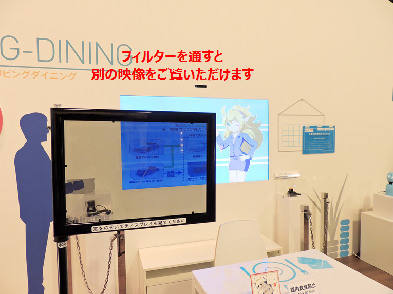
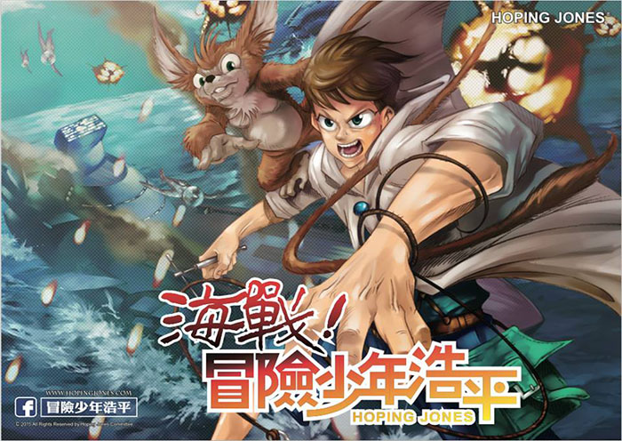

News
-
hisataka wrote a new post, SIGGRAPH2015@L.A. まとめ, on the site 絶賛、研究日和 4年 10か月前
去年に引き続き今年もポスターでSIGGRAPHに参加してきた。
今年の会期は8/9-8/13でL.A.コンベンションセンターで行われた。
Technical-Paper、E-Tech、Poster、Exhibition、Art-Gallery、Talk、AR/VR Contest、Dailies、Studioなどの去年もあったものに加えて、VR […]
-
shirai wrote a new post, SIGGRAPH 2015にて3件の発表を行います, on the site Shirai Lab 4年 10か月前
2015年夏もついに前期講義が終わり、アメリカ・ロサンゼルスから夏のご挨拶です。
今年も上半期、大変お世話になりました！
ロサンゼルスにて開催される世界最大のＣＧ・インタラクティブ技術の国際会議「ACM SIGGRAPH」ですが、
白井先生＆白井研究室からは以下の3件の発表を行います。以下時系列で紹介。
[Birds of a Feather] International Collegiate […] -
shirai wrote a new post, 共同プレスリリース：TEPIA 先端技術館に多重化・不可視映像技術「ExPixel」を常設展示, on the site Shirai Lab 4年 10か月前
2015年8月4日、富士通SSL社との共同プレスリリースを発信いたしました。以下再掲いたします。
SIGGRAPH ASIA 2015 神戸での展示発表についてもこちらで公開させていただきます！
「TEPIA 先端技術館に多重化・不可視映像技術「ExPixel」を常設展示」
～神奈川工科大学 白井暁彦准教授と共同で実用化を進める多重化・不可視映像技術「ExPixel」をTEPIA […]  -
shirai wrote a new post, 2015年度3年前期セミナー終了！, on the site Shirai Lab 4年 10か月前
白井研究室3年セミナーが無事終了しました。
3年生向けに「エンタテイメントVR」をテーマに
・IVRC（国際学生対抗VRコンテスト）へのチャレンジ
・DeNA社のマッチングイベント「HEAT渋谷」への参加
・ニコニコ超会議2015への参加＆受賞
・IVR展にスーツ着て参戦
・コンテンツ東京も見学
・各自研究テーマを見つけて3週間で取り組み（Unityによるキャラクターアニメー […]

-
Ryotaro Tsuda wrote a new post, 最近のUnity開発事情(Unity×VisualStudioCode×Git), on the site 汗を流して飯が旨い 4年 10か月前
ここ最近のUnity開発事情について
Visual Studio Code × Githubの組み合わせをよく使っていますUnity×VisualStudioCode連携はいい感じ
やり方について軽く解説UnityのPreferencesから使用するエディタをCodeに設定
Unityからスクリプトを作成，右クリック-Sync MonoDevelop […]

-
s1323133 wrote a new post, 私が白井研究室セミナーを通して学んだこと（齊藤弘朗）, on the site 白井セミナー 2015前期 4年 10か月前
こんにちは、神奈川工科大学情報学部情報メディア学科
学籍番号1323133の齊藤弘朗です。
今回は私は前期セミナー配属で白井研究室セミナーに配属されました。先日で最後の講義が終了しましたので私が白井研究室セミナーで行ったこととそこから学んだことを書いて行きたいと考えています。私が白井研究室で行った主なことは2つあります。1つ目にIVRCの企画書と企画概要の制作と提出
2つ目に自分のやりたいことである […]

-
s1323023 wrote a new post, 番組制作 課題への道, on the site 白井セミナー 2015前期 4年 10か月前
こんにちわ、神奈川工科大学 情報学部 情報メディア学科3年 強矢栄輝 です。
私は、セミナーでニコ生の番組制作をさせていただきました。
放送でお借りしたせらみかるさんの絵 im2426607
1回目は「30分で朗読をしてみた」というタイトルで生放送をしました。
放送はこちら
読んで思ったこととして、昔は朗読がうまく読めていたのに、漢字を読めなかったり、感情の入れ方が分からなくなったりして「こんな […]
-
s1323069 wrote a new post, 白井研究室セミナーを通して学んだこと（菊崎駿介）, on the site 白井セミナー 2015前期 4年 10か月前
こんにちは、神奈川工科大学情報メディア学科3年生の菊崎駿介です。
先日で最後のセミナー授業が終わりました。
今回は今までのセミナーでどういうことをやってきたか、そして学んだことをまとめていきます。
IVRC2015
前半は「IVRC2015」出場を目指し、同じセミナー生の強矢君と協力して『めかくしんどう […]
-
Yuta Yamaguchi wrote a new post, コミックマーケットにおける実践的マーケティングの研究, on the site 白井セミナー 2015前期 4年 10か月前
こんにちは！神奈川工科大学 情報学部 情報メディア学科 […]
-
Mao Furuta wrote a new post, 白井研究室セミナーを通して学んだこと（古田真緒）, on the site 白井セミナー 2015前期 4年 10か月前
こんにちわ。神奈川工科大学情報学部情報メディア学科3年の古田真緒です。今回は白井研究室セミナーで自分が学んだ事について書いていきます。
前期白井研究室セミナーで自分がやったことは大きく分けて3つです。
・IVRC2015に企画を投稿
・IFTTTを使ったBot作成
・ゴーストブラスト企画コンペに参加（2015年7月末現在も継続中）
他にもニコニコ超会議のスタッフとして参加したり、IVR展を見て回 […]

-
s1323069 wrote a new post, 大学3年生でCEDECに初参加してみる～情報収集編～, on the site 白井セミナー 2015前期 4年 10か月前
こんにちは、神奈川工科大学情報メディア学科3年生の菊崎駿介です。
皆さんは「CEDEC2015」をご存知ですか？
パシフィコ横浜で2015年8月26日から28日までの3日間開催される
日本最大のゲーム開発者向けカンファレンスのことで、
ゲームに関連する様々な分野の講演が行われているそうです！1年生のときにCEDECの存在を知って、そのときから興味はあったのですが、
参加費用の関係で毎年断念してい […]
-
s1323133 wrote a new post, プログラミングができない大学3年生がオンラインゲーム作りに挑戦する。, on the site 白井セミナー 2015前期 4年 10か月前
こんにちは、神奈川工科大学情報学部情報メディア科3年の齊藤です。今回私はUnityを使ったオンラインゲームの開発に挑戦したいと考え行動しました。
そして私は私と同じようにオンラインゲームに興味を持ち作りたいと考えている人たちの助けになるようにと私が参考にした本と自分が行った流れをこのブログに載せていこうと考えました。私が使った本は河田匡稔著の「オンラインゲームのしくみ […]

-
yoshiki wrote a new post, 白井研究室セミナーを通して学んだこと（藤澤佳記）, on the site 白井セミナー 2015前期 4年 10か月前
こんにちは。神奈川工科大学情報メディア学科の藤沢です。
まず、私が神奈川工科大学のセミナーについて軽く触れて、それから学んだことを記していきたいと思います。
私が所属する情報メディア学科では、３年次前期に行う授業としてセミナーというものがあります。これは先生ごとに内容の異なる短期のゼミのようなものであり、授業をしながら研究室について学ぶことができます。
私はこのセミナーで白井先生の行うセミナーを選択しました […]
-
Yuta Yamaguchi wrote a new post, TEPIA先端技術館にてNHKの生放送をナマ体験(2015/7/18), on the site 白井セミナー 2015前期 4年 10か月前
こんにちは！神奈川工科大学 情報学部 情報メディア学科 3学年の山口裕太です。
7月18日の早朝４時起きで「TEPIA […]
-
shirai wrote a new post, 世界最大級マンガイベント「台湾漫画博覧会」でコラボ, on the site Shirai Lab 4年 10か月前
2015年8月6～11日に台湾・台北世界貿易中心展覽一館にて開催される、世界最大級のマンガイベント「台湾漫画博覧会2015」において、Manga Generatorが、台湾の人気漫画「冒險少年浩平」（ホッピン＆ジョーンズ／Hoping & […] 
-
shirai wrote a new post, 2015年度オープンキャンパス・白井研究室が見れるのは7/26のみ！, on the site Shirai Lab 4年 10か月前
今年度の9月までの神奈川工科大学のオープンキャンパスは6/7、7/19、7/26、8/16に予定されております。白井研究室の研究室体験の担当は7/26になります。
その後、定員オーバーしたそうです。当日のキャンセル待ちに期待してください（望み有）。
★研究室の公開ではなく「体験」ですので、自由訪問ではなく予約制です。13:00～15:30にK1棟502室にて実施します。見学歓迎です。
なお、8/16もおすすめですよ！
-
s1323141 wrote a new post, だれでもわかるUnityインストール方法, on the site 白井セミナー 2015前期 4年 11か月前
こんにちは，神奈川工科大学情報メディア学科3年生の赤羽です．
みなさんUnityというゲームエンジンを知っていますか．
Unityとは統合開発環境(※1)を内蔵し，複数のプラットホーム(※2)に対応する
ゲームエンジンのひとつです．
今回はUnityをインストールしたいけどサイトが英語でわからないという人の為に
インストール方法を図を用いて紹介していきます．まず，Unityをインストールする前にいくつか知っ […]

-
shirai wrote a new post, 相模原市立博物館との協働事業終了、公開事業報告会で発表します(7/11), on the site Shirai Lab 4年 11か月前
「はやぶさの日、応援動画」、写真ワークショップ「博物館のここがスキ！」、「全身・太陽圏」や「相模Ingress部」などの特色ある地域連携活動を続けてきた、相模原市立博物館との協働事業「相模原市立博物館情報ネットワークセンター事業 みんなでつくる相模原『知的探求散策アルバム』」ですが、平成26年度末をもって終了しております。
平成26年度・相模原市協働事業提案制度で実施された事業について、成果を検証する公開事業報告会を開 […]
-
Yuta Yamaguchi wrote a new post, 7/3 コンテンツ東京に行って来ました！, on the site 白井セミナー 2015前期 4年 11か月前
こんにちは！神奈川工科大学 情報学部 情報メディア学科 […]
-
s1323023 wrote a new post, IVR展に行きました/が・・・・!?, on the site 白井セミナー 2015前期 4年 11か月前
こんにちは、神奈川工科大学 情報学部 情報メディア学科3年の強矢です。
6月25日（木）、東京ビッグサイトで行われた「3D＆バーチャルリアリティ展」と
「設計・製造ソリューション展」に特別公演に行ってきました。今回はセミナーで授業として参加させていただきました。
が、当日にスマホがショートを起こし、1日携帯が使えず、
現地の写真をとることができませんでした
あの時に充電しておけばと後悔しつつ・・・・
[…] - もっと読み込む